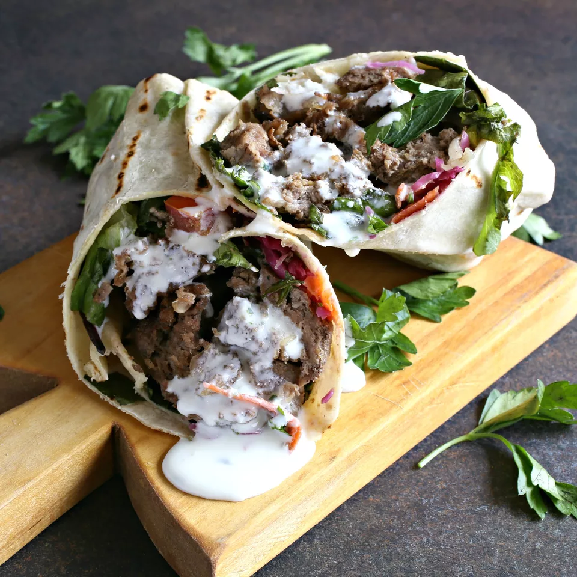

Doner Kebab

Description
Doner kebabs are just one type of kebab, of which there are hundreds worldwide. Originating in Turkey, they're traditionally made of lamb, although today it's common to find them with a mixture of lamb and beef, or even exclusively beef. Making a traditional doner kebab at home can be a bit tricky, although it's still possible if you have the setup for a slow-cooking, vertical-rotating spit. For most home kitchens, however, some improvisation will be required. This recipe aims to capture the flavors of the doner kebab more than the rotisserie cooking method. Rather than being a traditional recipe, it is a contemporary interpretation of the popular street food, modified to be friendly for home cooks.
Ingredients
- 1 pound ground lamb (or 1/2 pound each of ground lamb and ground beef)
- 1 large egg
- 4 clove garlic, peeled and finely minced
- 1 teaspoon ground cumin
- 1 teaspoon ground coriander
- 1 teaspoon smoke paprika
- 1 teaspoon dried oregano
- 1/2 teaspoon kosher salt
- 1/4 teaspoon ground black pepper
- 1 tablespoon oil, more for the pan
For the Sandwich:
- 4 large pita, naan, or flatbread
- 1 cup assorted lettuce leaves
- 1 large tomato, sliced
- 1/2 medium English cucumber, sliced
- 1/4 large red onion, peeled and slice
- Tzatziki sauce or tahini sauce
Steps
- Gather the ingredients.
- Preheat the oven to 350 F.
- In a large bowl, combine the ground lamb, egg, garlic, ground cumin, ground coriander, smoked paprika, dried oregano, salt, and black pepper.
- Place the mixture into an oiled 9 x 5-inch loaf pan and cook in the oven for approximately 30 minutes or until the top is a light golden brown.
- You can slice the loaf immediately if you like but, for best results, cool completely, wrap in aluminum foil, and refrigerate until firm.
- To reheat, add a little olive oil to a large skillet, slice the loaf very thinly and crisp up the slices in the hot pan for a few minutes.
- Assemble the sandwiches with pita, warmed and toasted through. Spread on some tzatziki or tahini sauce, add lettuce, tomato, cucumber, onion, and top with more sauce.
- Serve and enjoy.
Return to homepage
Return to top